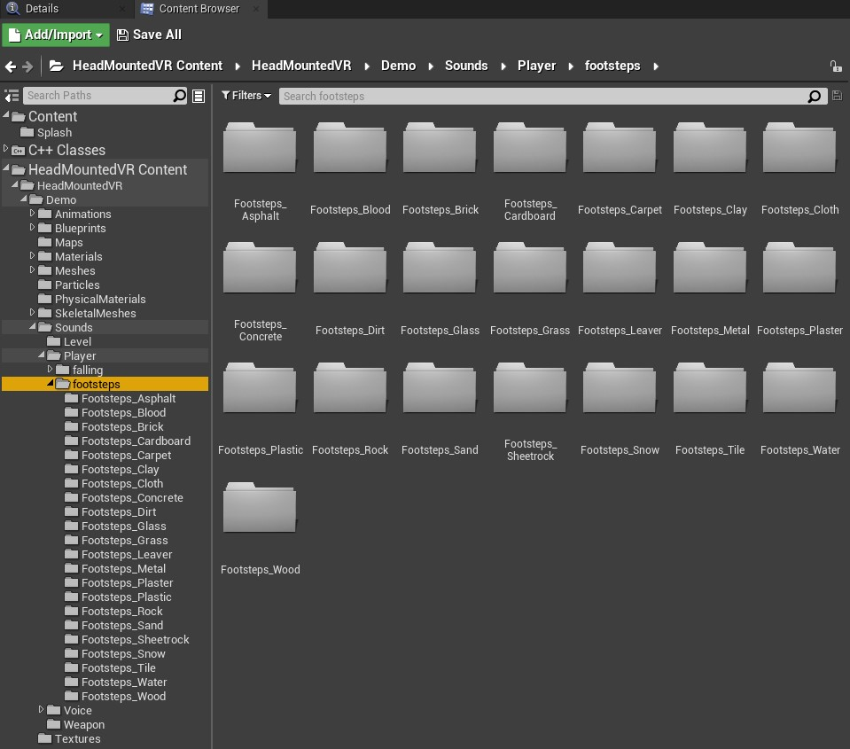

Loading...
Searching...
No Matches
Head Mounted VR
General
This plugin integrates VR features in an intuitive and easy to use way for Unreal developers. It implements a physically based interaction for VR. Plugin was inspired by Half-life: Alyx game mechanics and brings us familiar features. The goal of this project is to develop AAA VR quality functional available for every developer and build a great VR developers community for strong feedback.
What does this project offer us?
New Player class
Whole new player pawn class was developed especially for VR. It has a completely new movement which was written from scratch to fit the VR concept. There was huge research to reduce motion thickness. Player’s camera function was redesigned. Down below there are some key features of the new player class.
Player collision
Player collision has an ability to adapt to the player's height and follow the camera during the movement in the real world. Moving in room scale makes collision behave as expected. Collision will not pass through the walls. Instead it will react to all obstacles.


Movement
With new collision behavior smooth movement arrived. Project also supports teleportation and an ability to customize the player’s turn. Smooth and snap turns are supported.

Sound
Plugin comes with a variety of footsteps sounds. Sound will play depending on the surface type the player steps on or falls on. It is also possible to play a voice line for in game dialogs.

Inventory
It is possible to place ammo in inventory which is located at the left shoulder. This gameplay feature can be redefined.
Main menu and pause menu
Player can spawn with main menu status or spawn pause menu by holding a button on a motion controller.

Hand class
Player’s hands are fully physically based and like in player class there was a huge research on immersion, collision and interaction with objects.

Fully physically based
There was a huge attention paid to the hand physics behavior.(PhysX) How would the hands behave if they were stuck? How to feel the weight of the objects? What solution can help us avoid physics errors? Answers on all these questions were found.
Collision for each finger
Hand collision requires only the physics asset to be done. No additional components are required for the class. Finger collision will adapt to the finger curls value(Index controllers and other controllers/gloves are working with this method).
Interaction
Interaction is the most important aspect of immersion into the virtual environment. Player can interact with grabbable objects, doors, drawers, levers, buttons, weapons etc.


Grab IK and animations support
After interaction specific animation can be applied. It can be static animation or IK. Fingers will be positioned at the hit points of the finger trace. IK animation can use 0.0 - 1.0 to identify the position or it can use hit position to locate the tips of the fingers(Position based IK requires a specific skeleton).

Inventory
There are circle inventory by default which can be shown by pressing the button. Spawn inventory function and the inventory class can be overwritten.

VR Actors
VR actors are classes with which player can interact with such as static meshes, skeletal meshes, levers, valves, doors, drawers, buttons etc . Interaction is also physically based but there is an option to disable it. It also provides different grab methods: Attach to, physics and IK, physics and static animation, physics and static animation to near socket, static animation combined with IK.
Weapons and equipment
There is a flexible weapon class which can be used for any weapon creation. It has all developers need for easy development. Particles, sound functional and all needed functions can be overwritten. Also there is a “Equipment” class which was made for button functionality. Developer can overwrite button press functions for personal purposes.

Loading handler
It allows a player to move between the levels by using the loading room. It can be used for opening new levels or for a level streaming.
Game saves
There are save game classes for saving player’s preferences and for the level transition to save inventory etc.